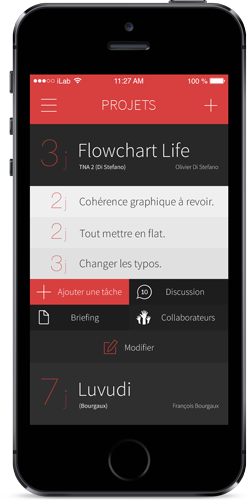
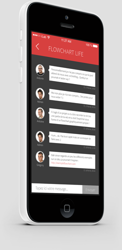

Le professeur (ou un étudiant) ajoute le projet en question et le partage à tout le groupe de travail (ou la classe). Chaque étudiant de cette classe possédant Cépourkan recevra instantanément le nouveau projet dans sa liste, classé par date.
Fini les oublis et autres nuits blanches la veille de la remise, Cépourkan organise vos projets.
Tâches personnelles par projet
Tout le monde ne travaille pas de la même façon. Pour chaque projet commun, Cépourkan vous invite à créer vos propres tâches à réaliser dans un temps imparti.
Celles-ci resteront personnelles, gérez-les comme vous le souhaitez.


Une question sur un projet ?
Cépourkan possède un espace de discussion pour chaque projet partagé, que ce soit entre un groupe d'amis, ou même à toute la classe.
Toute personne inclue dans le projet pourra ainsi répondre ou alimenter la conversation pour éclaircir les zones d'ombre et autres incompréhensions sur ce même projet.